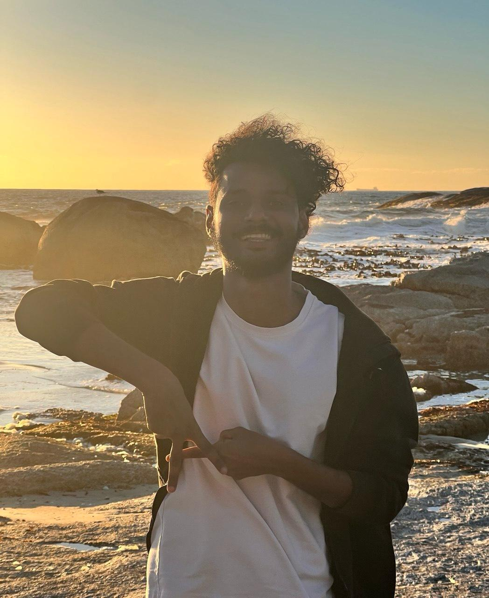

About my Education

I'm a machine learning researcher based in Kigali, Rwanda. I work on reinforcement learning without hand-designed rewards (contrastive & goal-conditioned RL) and cooperative multi-agent RL.
I work on reinforcement learning that learns from goals instead of rewards. My recent work, CPPO, is an on-policy contrastive RL algorithm that needs no reward function and no replay buffer, and matches or beats PPO trained on hand-designed rewards on 12 of 18 tasks. It was accepted to the NeurIPS 2026 main track, where I'm co-first author (arXiv:2605.13554). I'm also a co-author on ATLAS, inference-time search for teams of up to 200 agents, also at NeurIPS 2026.
I did this work as a research engineer at InstaDeep with the Mava team, and I'm now a machine learning engineer at DeepGate. Before that, I did my MSc in AI for Science at AIMS South Africa / UCT as a Google DeepMind Scholar, graduating with Distinction and the AIMS Excellence Award. I'm applying for PhD positions starting in 2027.
Contrastive RL • Goal-Conditioned RL • Multi-Agent RL • Self-Supervised RL • Curriculum Learning • LLM Agents & Inference-Time Scaling
Python • JAX • PyTorch • vLLM • HuggingFace • TRL • Unsloth • LangGraph • LangSmith • LiteLLM • Hydra • TPU/GPU
Autonomous LLM Agents • Agentic Workflows • Inference-Time Scaling • SFT/Fine-tuning • vLLM Serving • MLE-Bench
DeepGate · United Kingdom (remote)
Machine learning engineer at a UK AI startup.
Worked with the Mava team on multi-agent reinforcement learning research. Developed CPPO, an on-policy contrastive RL algorithm (NeurIPS 2026, co-first author), and contributed to ATLAS (NeurIPS 2026). Also built Tinkerer — an autonomous LLM-powered multi-agent system for automated scientific discovery, featuring a closed-loop workflow of idea generation, code implementation, experiment scheduling, and result collection.
University of Cape Town & AIMS South Africa
AI for Science program in partnership with DeepMind. Focused on reinforcement learning, deep learning, and their applications to scientific problems.
Worked on the development of agriAI, a field monitoring application providing real-time insights into crop health, soil conditions, and environmental factors.
Built a crop classification pipeline using Random Forest with Sentinel-2 multispectral bands, achieving 89.22% accuracy in categorizing key crops in El Gezira. Contributed to the agriAI project — an intelligent farming assistant providing real-time crop health and soil analysis.
A selection of my original research and engineering projects
The first on-policy contrastive RL algorithm, and the first to handle discrete action spaces — learns goal-conditioned behaviour with no reward function, replay buffer, or GAE. Across 18 tasks in 5 suites, matches or beats reward-engineered PPO on 12. Code on GitHub.
Fine-Grained Credit Assignment for RL Training. Token-level reward assignment to improve training stability and sample efficiency for LLMs.
Combining contrastive reinforcement learning with unsupervised environment design for multi-agent curriculum learning.
Autonomous LLM agent for end-to-end ML engineering via tree search. Uses inference-time scaling (Self-Reflection, Planner-Coder, Self-Consistency) and a self-hosted vLLM backend to get a distilled 32B open model to a 30% medal rate on MLE-Bench — matching OpenAI o4-mini. (MSc thesis.)
LLM-powered multi-agent workflow for automated scientific discovery. A closed-loop system where an AI Scientist generates research ideas, an Engineer implements them in code, a Scheduler runs experiments, and a Collector gathers results — autonomously iterating on ML research. Built with LiteLLM, Claude Code, Hydra, and Neptune.
Detecting GenAI-generated content and sophisticated manipulation in public media using machine learning.
Supervised fine-tuning pipeline for DeepSeek-7B. Custom training data curation, LoRA/full fine-tuning experiments, and evaluation for specialized ML engineering tasks.
Neural machine translation system for Arabic to Swahili, addressing low-resource language pair challenges.
Asim Osman*, Sasha Abramowitz*, et al., Arnu Pretorius. *Equal contribution. arXiv:2605.13554.
Daniel Rajaonarivonivelomanantsoa, et al., Asim Osman, et al., Arnu Pretorius, Felix Chalumeau.
Asim Osman, et al.
I'm looking for PhD positions starting in 2027, and I'm always happy to talk about research collaborations or just chat about RL and AI.